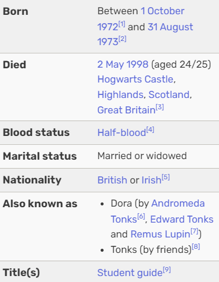

---------------------------------------------------------------------------------------"The most loyal and kindest school of all!"-----------------------------------------------------------------------------------------------
Nyphadora Tonks
She is a witch and a skilled Auror, known for her ability to change her appearance at will due to her Metamorphmagus abilities. Tonks is also a member of the Order of the Phoenix, fighting against Voldemort and his followers. Her character is notable for her vibrant personality, loyalty, and her romantic relationship with Remus Lupin..

Tonks's magic is particularly fascinating due to her Metamorphmagus ability, which allows her to change her physical appearance at will. This skill is rare and enables her to alter her hair color, facial features, and even her height, making her highly versatile in various situations.
In addition to her shapeshifting, Tonks is a talented Auror, which means she is trained in magical law enforcement and combat. She excels in spells and defensive magic, contributing significantly to the Order of the Phoenix. Her training and natural talent make her a formidable opponent against dark forces.
Tonks also has a knack for the charm spells and is known to be somewhat clumsy, which adds a touch of humor to her character. Her magical abilities, combined with her bold personality, make her a memorable and beloved character in the series.